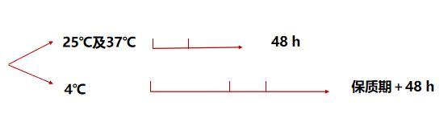

Design
研究进程
参加导师刘金鑫主持或报告的论坛
2022.11.09 刘金鑫 《犊牛微生物抗性组组建规律及机制》
2022.11.16 朱伟云 《肠道微生物研究之昨天，今天，明天》
2022.11.30 梁冠翔 《健康和疾病中的人类病毒组》
2022.12.28 陈卫华 《肠道微生态的精准调控：从数据挖掘到临床应用》
样品收集
商品乳9份，3类灭菌处理，6种品牌
巴氏杀菌乳（PAS）：63℃-65℃，30min，N=4
延长货架期的巴氏杀菌乳（ESL）：125~130℃， 2~4 s，N=1
超瞬时杀菌乳（INF）：143～158℃，0.05～0.5 s，N=1

三种杀菌方式牛乳样品（巴氏杀菌乳PAS，延长货架期的巴氏杀菌乳ESL ，超瞬时杀菌乳INF） 4℃、25℃、37℃储存并探究其在储存过程中微生物变化。 巴氏杀菌乳分4℃、25℃、37℃储存进行培养 高通量测序与传统微生物培养技术结合